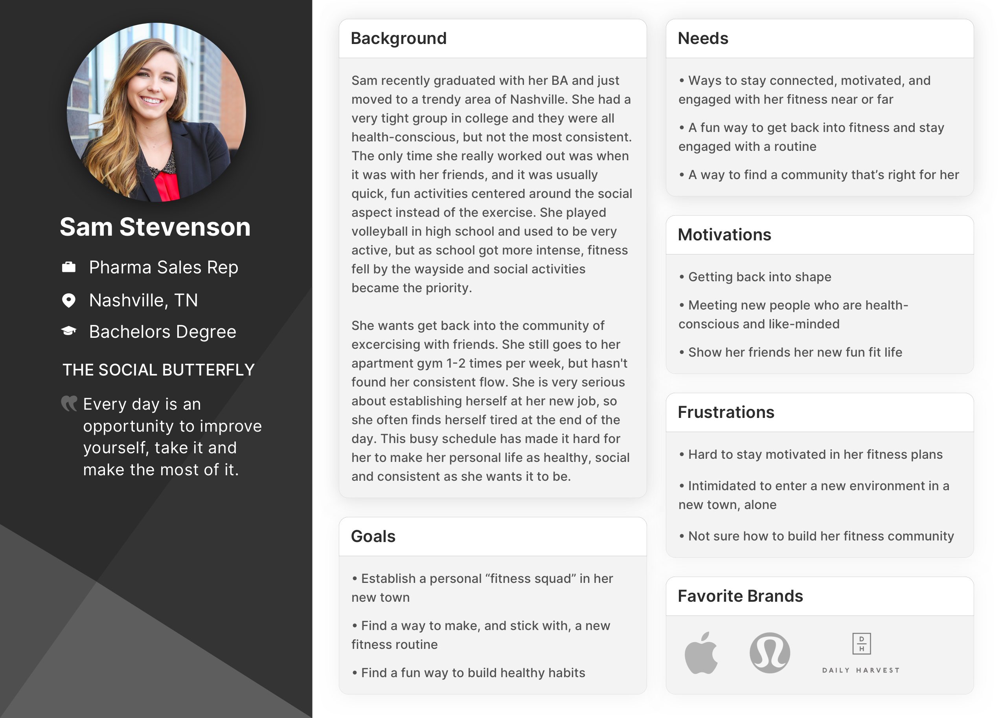
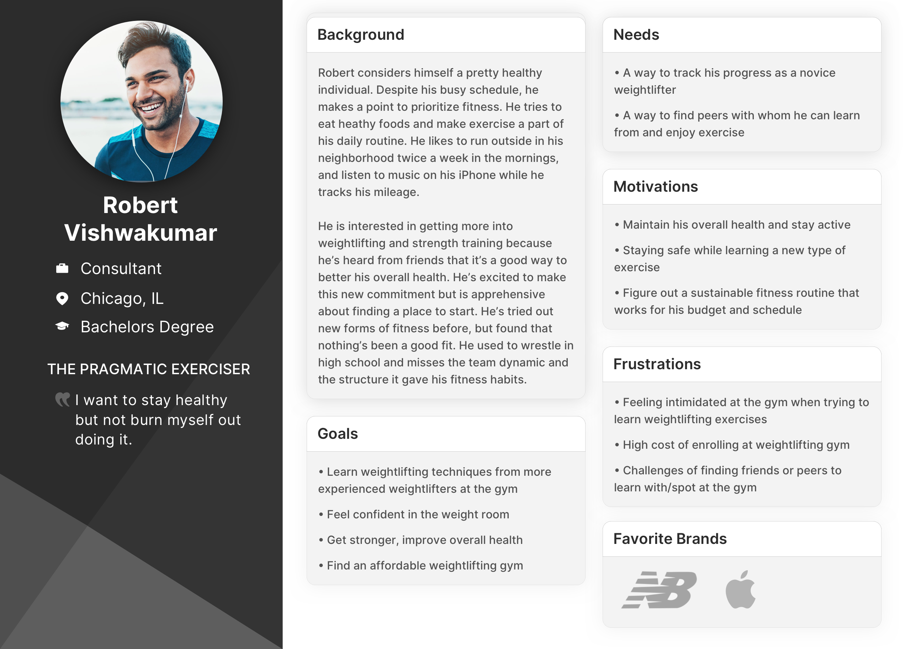
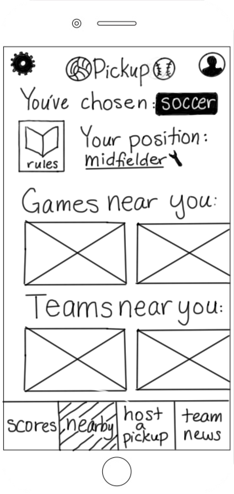
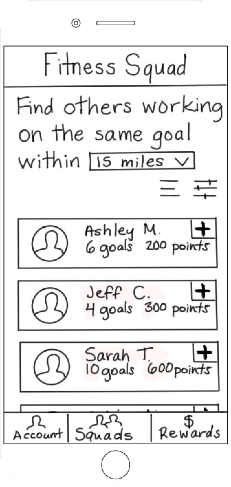
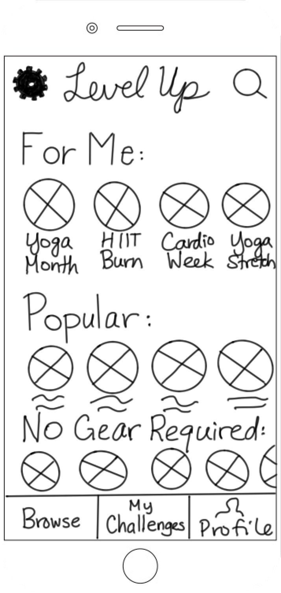

Building Consistency and Confidence in Millennial Fitness Lifestyles
isolating and identifying the correct problem to solve
Summary
Millennials are perhaps the most health-conscious generation yet, giving rise to an ever-growing market of unique fitness activities. With options ranging from the traditional (gyms and at-home workouts) to the outlandish (goat yoga and trapezing), there’s no shortage of fitness options. However, despite having a heightened awareness of the importance of exercise as well as a plethora of options, they are still succumbing to trends like obesity and chronic disease. Pair this with high levels of loneliness and isolation, and we’re left with a unique challenge: how can fitness be structured in such a way as to promote routine exercise and reduce loneliness? My team explored this challenge with careful attention paid toward isolating and identifying the correct problem to solve. Ultimately, we devised a mobile app that would allow millennials to establish sustainable fitness habits while also building relationships with like-minded peers.
Resource and Timeline:
Five UX Designers, working remotely for 5 sprints
My Role:
UX Research and Design
Deliverables
Research artifacts (competitive analysis, user personas, journey map), app map, annotated wireframes, prototype
Background
The most salient challenge we faced in starting this project was the sheer number of fitness solutions already present in the market. Between wearable fitness trackers, mobile apps, personal trainers, scheduled group classes and even personal pen-and-paper logs, there are a multitude of options for all aspects of the fitness experience. This left me wondering: how do individuals choose one option over another, and how sticky is that choice? To answer these questions, my team conducted user interviews and ethnographic research with the target demographic: millennials (those born between 1980 and 1996) who have some type of fitness routine and an awareness of health-related brands.
Findings from interviewing 11 millennials and surveying 68 confirmed that millennials struggle to maintain a regular fitness routine and enjoyed bringing friends into their fitness experiences. This research also yielded three new discoveries:
- Schedules get in the way. Social interaction is a key motivator for selecting fitness activities, but 63% of those surveyed exercise with friends only a few times a year. That disconnect was largely due to the hassle of coordinating schedules to work out together.
- Boutique fitness is too pricey. Many millennials opt to attend boutique fitness classes, but cited cost as a key factor for why these weren't a regular routine. The price tag for an engaging, community-based fitness experience led them to use ad hoc, unsustainable workarounds to participate (sporadic free passes, multiple logins for free trials).
- Comfort and confidence over competition. These individuals welcome friendly competition but rate social interaction and feeling confident while exercising above competition in their fitness priorities. Rather than focusing on a leaderboard, these individuals prefer slow and steady progress in a comfortable and encouraging environment.
Articulating the Problem
Findings from our research allowed us to shape two personas who embodied the characteristics we heard most often.
 After mapping our these personas’ thoughts, feelings, actions and digital touchpoints via journey mapping, our team had a solid understanding of the core problem to address for these users: The Active Social Millennial needs a fun and immersive way to meet fitness goals with their fitness squad because it can be challenging to sustain motivation and maintain healthy habits individually.
Design Approach
We aligned our design process to a few principles: Our solution would inspire growth in our users in an engaging way, and encourage them to be their “best fitness selves” while finding a collective, genuine community spirit where they could be vulnerable and open.
Now that we had our problem identified, our team diverged to explore ideas for potential solutions. We knew a few parameters to guide this process:
- A mobile app was necessary as our ethnographic research and journey maps showed only mobile and wearable digital touchpoints during exercise scenarios.
- A sense of trustworthiness and a focus on community and motivation would need to be built into the product.
- We knew our users responded to social connectivity, were conscious of health brands, were looking for a fitness routine, and liked some element of friendly competition.
- We also knew that any solution created could not be prohibitively expensive and should not feature stats and tracking as a core feature, as our research showed that our users did not value that functionality.
Ideating within these constraints left us with three feasible ideas:
- A pickup game concept where users join an existing game or create their own and connect to others in the league
- A community-based concept where users find fitness squads and earn points upon reaching a collective goal
- A challenge-based concept where users choose from curated challenges that they could complete immediately or queue



Testing revealed that users liked the main aspects of each concept, but disliked the initiative required in the pickup game and fitness squad ideas as they required users to create the exercise plan. Users liked being able to connect with other players and earn points, but sought clarity on what those points would get them.
In synthesizing these responses, we found that the best-performing features from each concept could be combined.
The Burn n’ Earn product began to take shape: a mobile app where users can sign on to multi-day challenges completed with peers in-person at their gym or virtually. Rather than earning points, users earn reward dollars for gear discounts and promotions with popular fitness brands.
Mapping out the Product
Our team conducted a card sort to determine appropriate information architecture for the app. We made a number of preventable mistakes here--some of the cards featured language more appropriate for a desktop setting rather than mobile, resulting in confusion and skewing the data. Additionally, because all of the card sorts were conducted remotely and a-synchronously, we missed out on the opportunity to inform users that they could title the categories into which they placed cards.
However, the card sort did provide useful suggestions for language choices that would better fit the mental models of users, such as “dashboard” and “account.” We used these findings to inform the overall app structure.

As we completed our first iteration of wireframing, we conducted a heuristic analysis and found issues in the areas of system status visibility and user control/freedom. If users were on, say, Day Three of a challenge, they weren’t able to see if they had already marked that day’s challenge complete and they weren’t able to leave a challenge once joined. We solved these issues via an Options menu.
The final product offered virtual challenges, providing our Sam persona with the flexibility required to establish a fitness routine on the go. The in-person challenge options give our Robert persona the opportunity to learn weightlifting exercises with peers in a relaxed environment. By connecting users via "squads," Burn n' Earn gives users a budget-friendly fitness option where they can exercise asynchronously with others.
Testing Results
In testing the prototype with users, we heard concerns about two areas: privacy and social engagement.
Privacy: We learned that users would prefer that their participation in a challenge is visible only to that challenge’s “squad,” and that the amount of reward dollars they’ve earned is removed from their public profile. As a result, we recommend that all information on “the squad” is removed from the public challenge page, with only small user thumbnails remaining to show users that there are real people in that challenge.
Social Engagement: We were surprised to see that close to 50% of users didn’t realize that they could connect with other users on a 1-1 basis and 60% of users wanted to be able to connect with other users beyond the public nature of the newsfeed. As a result, we believe conducting a series of A/B tests with a possible “fake door” element would aid in determining the need to build out 1-1 chat or connection features.
Evaluating Project Success
This most significant challenge of this project was the crowded marketplace around fitness products. While the solution presented is unique and garnered an average NPS score of 7.9, I personally did not conclude the project with a high level of certainty about the product’s likelihood of success. As a mock project, the ask presented to my team did at times feel like one of finding a singular problem for a particular solution. However, given that the project scope allowed for focus on all areas of healthy living (fitness, nutrition, or mental health), it was a very useful exercise in scoping down market focus and ideating under tight constraints.
Toggle dark/light mode